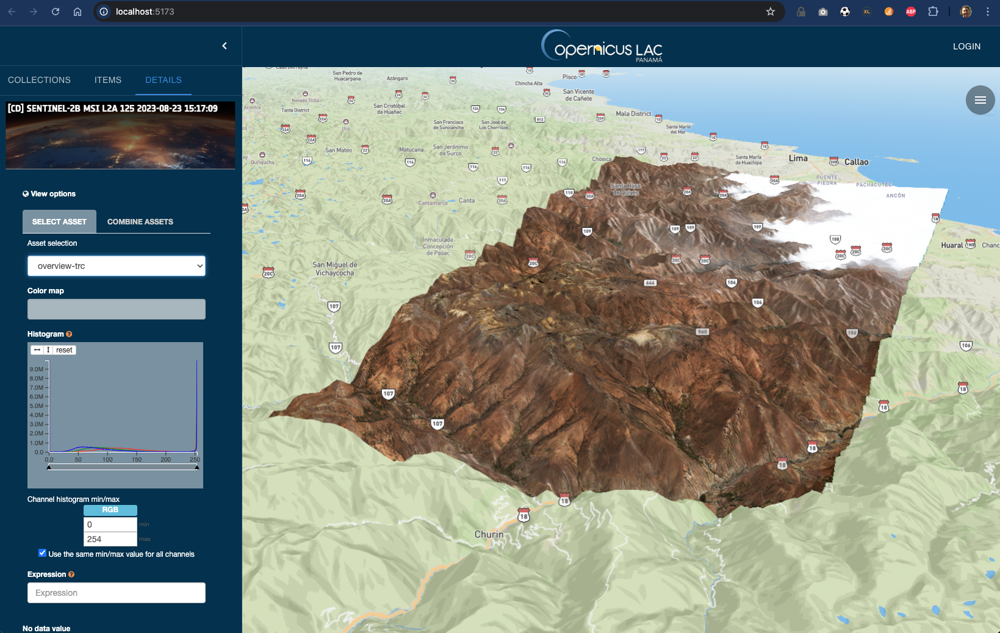

Visualisation Integration
Titiler como servidor de teselado dinámico sin estado, optimizado para COG en almacenamiento S3, integrable con Leaflet, OpenLayers o Mapbox GL JS.
The visualisation of the data is also a crucial component, bridging the gap between raw data and actionable insights. To enhance this capability, Titiler is integrated to harness the flexibility of modern geospatial practices, particularly the Cloud-Optimised Geotiffs (CoG) format, to convert geospatial raster data into web-friendly map tiles, which are then used to display maps on web applications.
Titiler is a dynamic stateless tiling server designed for web mapping applications that allows on-the-fly generation of map tiles is particularly useful for handling various types of geospatial data, including satellite imagery and elevation models. One of the significant
features of Titiler is its compatibility with multiple raster data formats. This flexibility makes it a versatile tool for different geospatial data applications.

Titiler is optimised for cloud environments, especially cloud storage solutions like S3, which is a boon for managing large datasets common in geospatial analyses, and integrates with web map libraries such as Leaflet, OpenLayers, or Mapbox GL JS.
With Titiler, platforms can effortlessly generate tiles from large geospatial raster datasets directly from cloud storage, without the need to download or process the entire file. This server-based approach ensures high-speed visualisation even for massive datasets. Titiler capitalises on the innate advantages of CoG, where partial data reads can be performed, meaning that only the necessary portions of the data relevant to a user's viewport or area of interest are processed and displayed.
The integration of Titiler enables the creation of interactive and engaging web maps. While Titiler offers customization options for the tiles, including tile size and format, it manages to maintain a focus on simplicity and efficiency and, as an open-source project, Titiler benefits from community-driven development and improvements. This open-source nature not only makes it accessible for a wide range of users but also encourages continuous enhancements and adaptations to the evolving needs of web mapping.